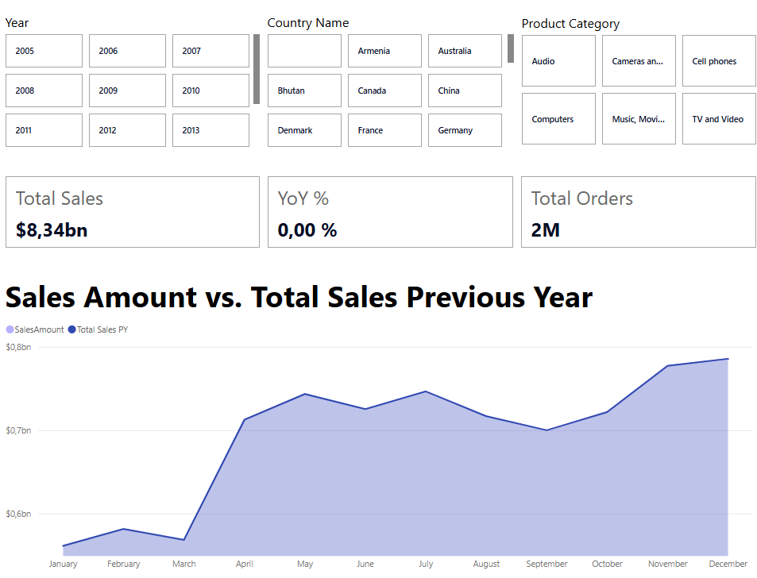
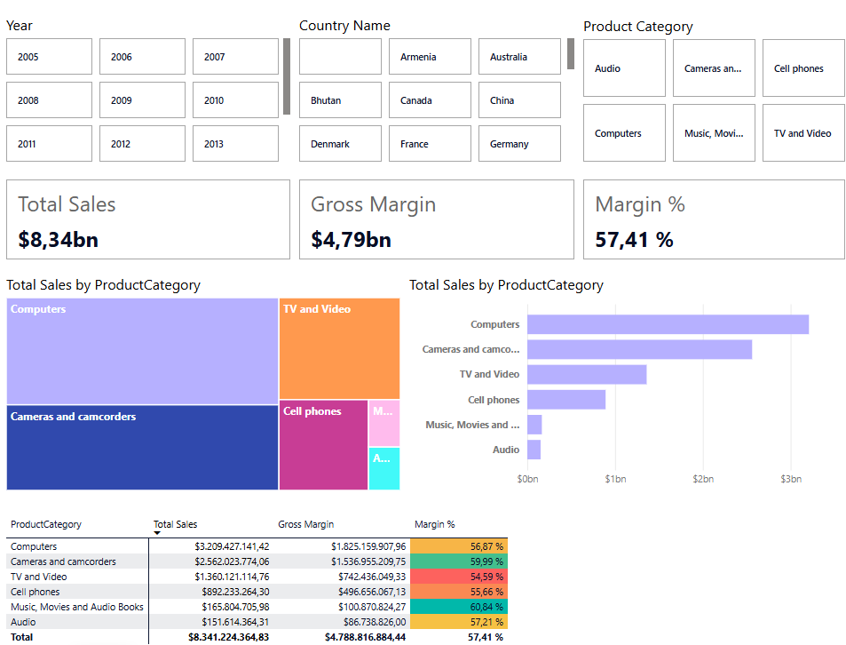
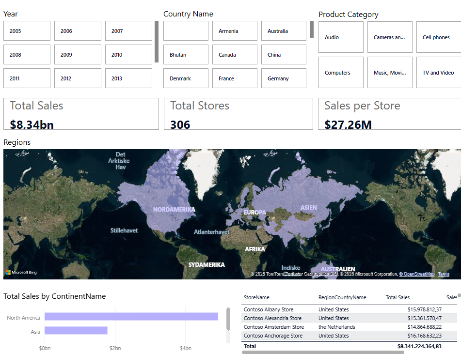
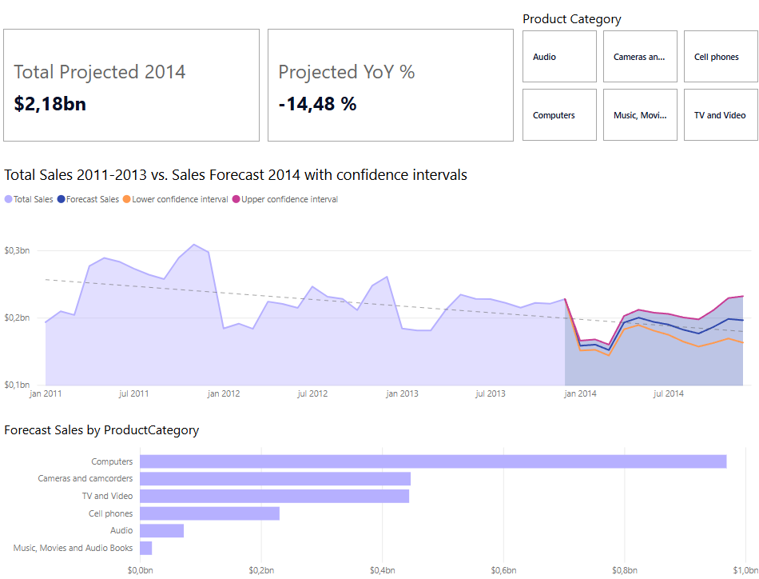

Contoso Sales Dashboard
Overview
Multi-page Power BI dashboard built on the Contoso retail dataset, covering $8.34bn in global sales across 6 product categories, 306 stores, and dozens of countries from 2005 to 2013. The report spans four pages: a sales overview with year-on-year comparison, a product breakdown with margin analysis, a geographic view with a world map, and a 2014 sales forecast with DAX time-intelligence and confidence intervals.
Methodology
- Imported the Contoso retail tables into Power BI Desktop and defined relationships between fact and dimension tables in the model view
- Used Power Query to clean and reshape raw tables — standardised column names, resolved data-type issues, and merged lookup tables
- Wrote DAX measures for Total Sales, Gross Margin, Margin %, Total Sales Previous Year, and YoY % using CALCULATE and time-intelligence functions
- Built cross-page slicers for Year, Country, and Product Category so filters carry through all four report pages
- Created the 2014 forecast page using DAX FORECAST.ETS-equivalent logic with upper and lower confidence interval measures overlaid on the historical trend
Built With
 Power BI
Power BI
 DAX
DAX
 Power Query
Power Query
Report Pages
- Sales Overview: KPI cards for Total Sales ($8.34bn), YoY %, and Total Orders (2M). Monthly area chart comparing current-year sales to the prior year, sliceable by Year, Country, and Product Category.
- Product Breakdown: Gross Margin ($4.79bn) and Margin % (57.41%) KPIs, treemap and horizontal bar chart by product category, and a detailed table with per-category margin data.
- Geographic View: World map visual with bubble sizing by sales volume, KPI cards for Total Stores (306) and Sales per Store ($27.26M), and a continental breakdown table.
- Sales Forecast: DAX-driven 2014 projection ($2.18bn, −14.5% YoY) with confidence intervals overlaid on the 2011–2013 historical trend, plus a forecast breakdown by product category.
Screenshots




Results
Computers are the top-selling category at $3.2bn (38% of total) with a 56.87% gross margin. Cameras and camcorders deliver the highest margin at ~60%, despite lower volume. The geographic view shows sales concentrated in a handful of high-performing regions, while the DAX forecast projects a 14.5% decline in 2014 sales, flagging a need for product mix or market expansion decisions.